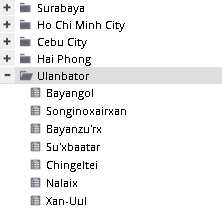

The switcher provides a possibility to change the level of analysis detail (level of units granularity), represented by different levels of analytical units. It enables switching to a lower or upper level of analytical units, for which statistics are calculated, by clicking on the switcher buttons:
Using this tool, you should follow the actual appearance of the hierarchical tree of units.
The switcher always expands / hides the lowest expanded level of analytical units. To avoid time consuming rendering of data and layers, it is recommended not to expand all units at the same time, especially on the most detailed levels of the hierarchy.
The switcher influences not only units in the hierarchical units' tree, but also of units displayed in charts and maps.
Analytical units can be expanded (or hidden) also using +/- buttons located in front of the units' names directly in the hierarchical tree.

Please note that expanding more analytical units at the same time using the level switcher can take a long time. Therefore, if you expect a higher number of units at a lower hierarchical level, it is recommended to expand only a single parent unit via clicking on the plus  icon in the hierarchical tree.
icon in the hierarchical tree.
The number of provided levels of analytical units (and the level of spatial detail of the data) depends on the availability of analytical units boundaries for each territory.
Available levels of analytical units for each territory are below:
Local scope:
Cebu City – 3 levels
Hai Phong – 3 levels
Ho Chi Minh City – 4 levels
Surabaya – 4 levels
Ulaanbaatar – 2 levels
For each of these GISAT mapping AOI's, the highest level of analytical units is represented by the AOI extent. The lowest level is represented by the most detailed administrative units available for a particular country.
National scope:
East Asia and Pacific - 4 levels
Regional scope:
East Asia and Pacific - 3 levels